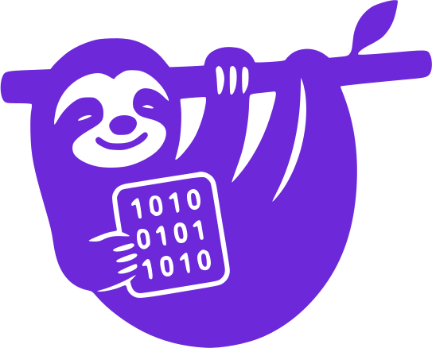
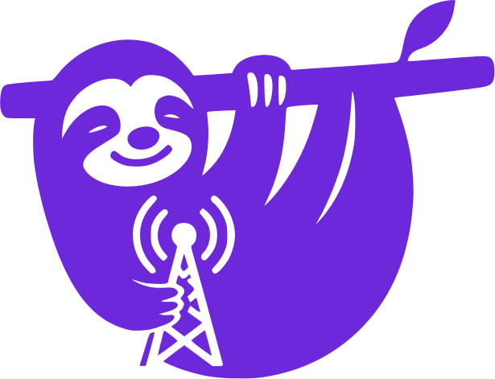

napttr — nostr accounting program tools

Nostr accounting program tools
(transmitted through relays).
Tools

nap
Nostr Accounting Program — ledger entries, accounts & reports over nostr.
nap - keyring signer
Masterkey-side signer for a nostr subkeys implementation.

nap - blobs manager
File manager for blobs encoded in nostr events.

nap - hidden relay
Implementation of a hidden relay over nostr rendez-vous communication.